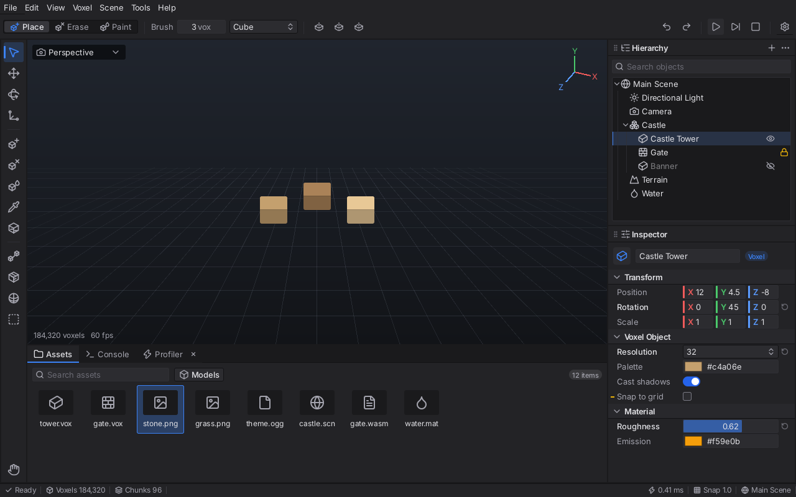

UI design system#
Package ui (immediate mode, drawn through render/canvas) ships a design system: colour roles, spacing/radius/type/icon scales, density, global UI scale, Inter + Lucide, and a set of themed widgets with hover/focus/pressed/disabled states and Dt-driven transitions. Reference: Unity/Unreal-style dark editors, one blue accent. go test ./ui -run Gallery style screenshots live in docs/ui/; examples/ui_showcase -gallery shows it on the Vulkan overlay.

docs/ui/layout-mock.png is the spec for the editor panel migration (stage U2). It is produced by ui.EditorMock (ui/mock.go): menu bar, context bar (mode segmented control, brush, mirror, undo/redo, play controls), vertical tool bar, viewport, Hierarchy over Inspector (right, 300 px), bottom Assets/Console/Profiler tabs, status bar (turns PlayAccent while playing). Regenerate: MOCK=docs/ui/layout-mock.png go test ./ui -run LayoutMockShot (env SCALE, THEME=light|hc, DENSITY=comfortable). Also: ui/gallery-dark.png, ui/gallery-light.png, ui/icons.png (all icons).
Colour roles (ui.Theme)#
| role | dark | light | use |
|---|---|---|---|
| Bg0 | #1a1a1c | #e6e6ea | window, viewport frame, tab strip, wells |
| Bg1 | #232326 | #f3f3f5 | panels, bars |
| Bg2 | #2c2c30 | #ffffff | fields, raised controls |
| Bg3 | #36363b | #e3e3e8 | hover |
| BorderDark | #121214 | #bfbfc8 | panel seams, button outline |
| Divider | #2f2f34 | #d5d5dc | separators, field outline |
| BorderStrong | #7a7a84 | #80808c | hover/active outlines (>= 3:1) |
| Text / TextDim / TextFaint | #e2e2e6 / #a3a3ad / #6a6a73 | #1b1b1f / #55555f / #80808a | primary / secondary + icons / hints, disabled |
| Accent (= FocusRing) | #3b82f6 | #2563eb | selection, focus, active tool, underline |
| AccentFill / AccentPress | #2563eb / #1e54cf | same | filled primary button (white text >= 4.5:1) |
| PlayAccent | #f59e0b | #b45309 | play state |
| Success / Warn / Error | #22c55e / #ebb308 / #ef4444 | #15803d / #a16207 / #c21f1f | status |
| SelectionFill | accent a=76 | accent a=58 | selected rows |
| ShadowSoft / ShadowHard | black a=96 / 170 | a=52 / 110 | drop shadows |
Legacy fields (Bg, Panel, Widget, Accent...) are derived from the roles so old widgets follow the theme. Themes: DarkTheme() (default), LightTheme(), HighContrastTheme(). LoadThemeJSON / SaveThemeJSON: validated (size cap 64 KiB, finite in-range metrics, opaque surfaces). ui.Contrast/ui.Luminance implement WCAG; TestThemeContrast asserts text >= 4.5:1 on every surface and icons, focus ring, accent and strong borders >= 3:1 in dark, light and high-contrast.
Scales (Theme.Tok, logical px at 100%)#
| token | values |
|---|---|
spacing Sp(i) | 2 4 6 8 12 16 24 |
radius Rad(i) | 2 3 4 6 (panels 4, controls 3, chips pill) |
| border | 1 hairline (>= 1 device px), 2 thick |
| density | compact row 22, comfortable row 26 (Theme.SetDensity) |
type TypeSize(i) | 11 12 13 14 16 20; weights Regular / Medium / SemiBold (Inter), mono = Go Mono |
icons IconSize(i) | 14 16 20 24 |
| bars | tool button 32, panel header 26, tab 28, status 22 |
| animation | fast 90 ms, base 140 ms, slow 220 ms, ease-out cubic, driven by Input.Dt only |
| z layers | ZBase 0, ZPanel 10, ZDropdown 100, ZPopup 200, ZModal 300, ZTooltip 400, ZToast 500 |
UI scale: u.SetScale(contentScale, percent) = ComposeScale (framebuffer factor x 100/125/150/175/200/250/300 %; ResolveScale picks the step from the system content scale, BURROW_UI_SCALE and the setting). Layout is in logical units; fonts are re-rasterized at round(size*Scale), icons at the exact device size, borders snap to device pixels.
Typography#
ui.TextStyle{Family, Weight, Size, Color, Letterspacing} with DrawTextStyle, MeasureStyle, EllipsisStyle, WrapStyle (deterministic). ui.FontFor(family, weight, px) is the shared atlas cache: Inter 4.0 Regular/Medium/SemiBold (1.2 MB total, OFL, see assets/fonts/LICENSE-Inter.txt), Latin + Latin-1 + punctuation, arrows, symbols; fractional advances and kerning; glyphs snapped to device pixels; unknown runes draw ?. Inter has no box-drawing glyphs (use FamilyMono).
Icons#
assets/icons: Lucide (ISC) path data converted to lucide.json (145 icons) + 8 voxel icons in custom.json (cube-place, cube-erase, cube-paint, cube-box-fill, cube-sphere, cube-line, cube-flood, cube-mirror). Pure-Go SVG path parser (all commands, arcs to beziers, caps on size/commands) and a round-cap/round-join stroker over x/image/vector; masks are cached per (name, px) and tinted at draw time. u.DrawIcon(name, rect, colour). Stroke = max(1.25, px/12) device px.
Canvas additions (render/canvas.Shapes, implemented by Recorder, so soft and Vulkan share batches)#
FillRoundedRectCorners (per-corner radii), StrokeRoundedRect (crisp, >= 1 device px), FillCircle/StrokeCircle, FillGradient, Shadow (baked, cached gaussian 9-slice), DrawNineSlice, DrawMask (pixel-snapped alpha mask), LineRound. Corners come from small baked coverage textures; straight edges snap to device pixels. Limits: no rotation, rounded clip falls back to the rectangular PushClip, very small shadow rects squeeze the 9-slice corners.
Widgets#
New: ButtonEx (primary/secondary/ghost/danger, icon), IconButtonEx (tooltip title/desc/shortcut chip), ToggleButton, SegmentedControl (sliding highlight), ToolButton + ToolBar + ToolbarSeparator, Badge, Chip, PanelHeader / PanelBox (title, icon, actions slot, grip, animated collapse), TabStrip (accent underline slide, close, dirty dot, drag reorder, overflow menu), SearchField, PropertyGrid / PropSection / PropRow (draggable divider, dim labels, mixed marker, reset arrow, foldable sections), NumberField (drag scrub, coloured X/Y/Z, unit, arrows), SliderField (value tooltip), ColorField, Dropdown, StatusBar / StatusItem, Toast/Toasts, TooltipRich, Collapse. Restyled in place: Button, IconButton, Checkbox, Toggle (switch), Radio, Combo, TextInput (icon/clear options), Progress, Tree (indent guides, row icons by name via TreeNode.IconName, hover eye/lock), Table (sort arrows), ListBox, scrollbars (slim overlay, auto-hide), menus (hover rows, submenu chevrons), popups/modals/tooltips (shadows), windows, dock chrome and drop zones, splitters.
Rules#
- Spacing from the scale; rows 22/26; icons 16 in rows, 20 in tool buttons, 12 in status/chips.
- One accent: blue for selection, focus, active tool, underline; orange only for play state; semantic colours only for status.
- States: hover = Bg3 (or accent tint for active), pressed darker, focus = 1.5 px accent ring, disabled = 50 % fill + faint text. Transitions use
animTo(Dt-driven, no wall clock, none in layout re-passes). - Text: 13 px Regular for content, Medium for buttons/tabs/modified labels, SemiBold for headers; dim text for labels.
- Static UI allocates nothing after warm-up (
TestDesignUINoAllocs); avoid string concatenation for IDs (idp,PushID).
Tests and numbers#
go test ./ui/... ./render/canvas/... ./assets/...: contrast, theme JSON caps + fuzz, font service, widget behaviour, determinism, goldens (testdata/design_hashes.json, soft canvas shapes_aa*, icon hashes), parser fuzz (FuzzParseRaster). Gallery frame ~0.15 ms CPU (record only), 0 UI allocations.